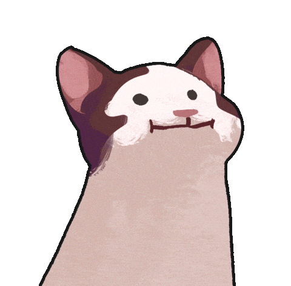

This page outlines the usability testing scenarios and tasks completed by participants to evaluate the functionality and overall user experience of PawTrack.
We prepared seven tasks and scenarios for our participants to evaluate the usability and overall experience of the PawTrack application.
You are a pet owner who wants to check the vaccination status of your pets and review their upcoming vaccinations.
One of your pets needs a vaccination. You want to schedule an appointment with a veterinary clinic using the app.
You recently got a new pet and want to register it so you can track health records and appointments.
After booking an appointment, you want to confirm that it appears in your records.
You want to review the complete vaccination history of your pet.
You want to explore different sections of the app using the bottom navigation menu.
You want to update your pet’s profile picture.